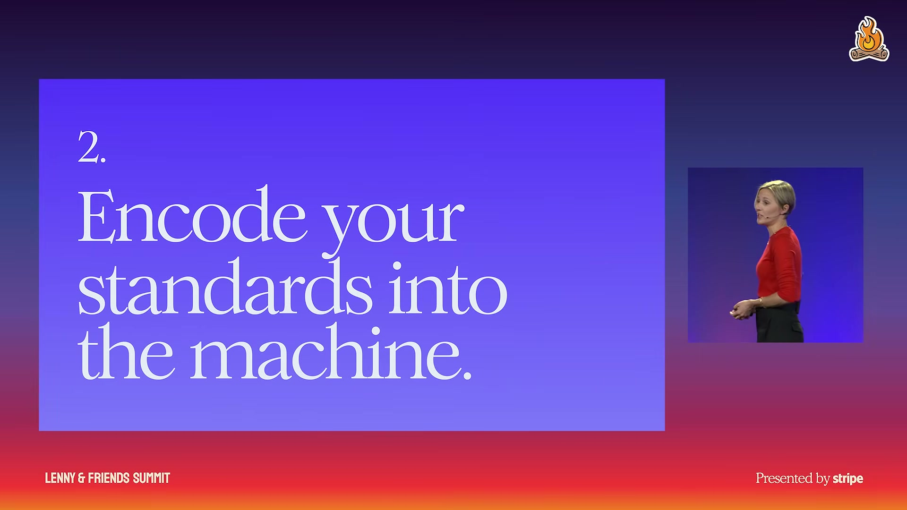
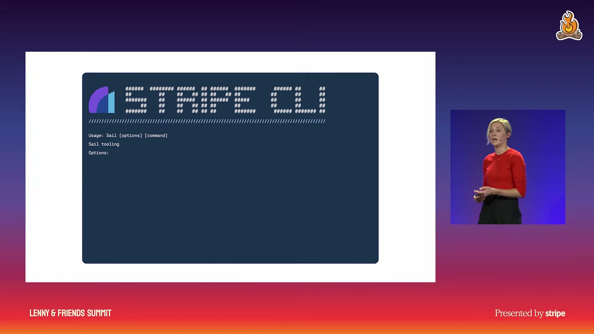
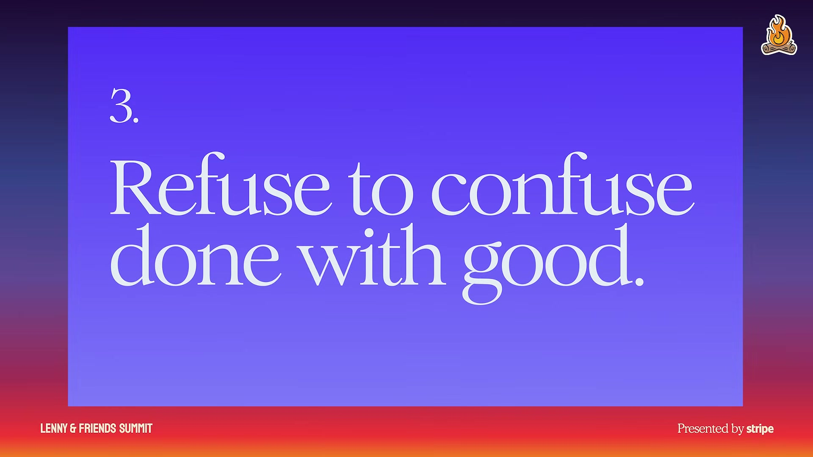
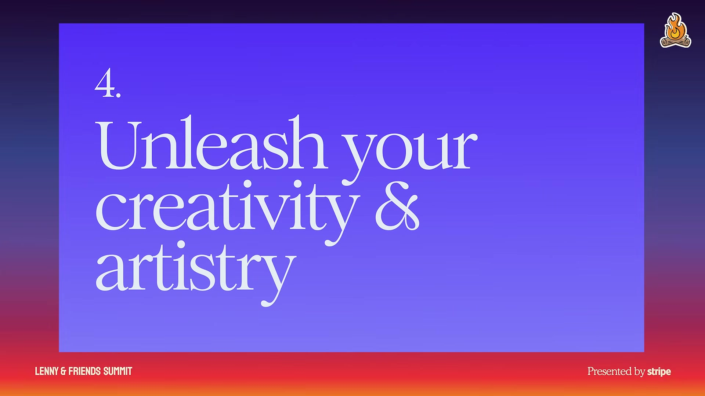

Executive summary
AI lowers the cost of building, but it does not supply a reason to build
Stripe Head of Design Katie Dill compares the current AI product boom with the construction boom after World War II. Modernism originally carried principles and a point of view. Under pressure to build quickly, its visible patterns were copied without the thinking that made them coherent. The result, in Dill's framing, was a landscape of generic “zombie buildings.” AI creates the same risk for software: a model can reproduce familiar forms, a polished interface can appear almost instantly, and the low cost of production can make the work feel disposable.
Her answer is not to reject AI or slow every team down. It is to relocate design work. When implementation becomes abundant, the scarce activities are deciding what the product should stand for, turning that intent into an executable system, judging the assembled experience, and pushing beyond familiar patterns. AI should raise the ceiling of what a team can imagine and refine, not merely raise the floor of acceptable output.
1. Have a point of view
Define who the product is for, what the brand believes, and what “good” means before the model fills the vacuum with a probable answer.
2. Encode standards
Move intent into components, templates, flows, documentation, tools, and constraints that are available at the moment of construction.
3. Edit after building
Cheap prototypes remove the old pre-build filter. Restore quality through end-to-end judgment, pruning, and repeated refinement.
4. Unleash artistry
Use AI to explore new interactions, aesthetics, and combinations rather than manufacturing more of what already exists.
Evidence boundary. This article is grounded in Dill's conference talk and its auto-generated transcript. Statements about Stripe's internal CLI and design workflow are her public description, not an independent technical audit. The practical framework and organisational implications below are interpretations derived from the talk.
The central analogy
The AI building boom can copy form while losing intent
Dill begins with architecture because buildings expose a distinction that software often hides: a style is not the same thing as a design philosophy. Early modernist work had a response to materials, industrial production, living conditions, and ornament. Later builders could copy flat surfaces, simple geometry, and monochrome palettes without carrying forward the reasoning behind those choices. The surface survived while the intent thinned out.
Generative AI is exceptionally good at the surface layer. It predicts plausible continuations from prior examples. That makes it efficient at producing recognisable patterns, but probability is not specificity. A model can generate a credible SaaS landing page for a Korean barbecue restaurant because it has found a statistically safe visual answer. The output may be polished, responsive, and technically complete while saying almost nothing about the restaurant, its customers, or the experience it wants to create.
The analogy matters because “generic” is not merely an aesthetic complaint. A context-free interface can misrepresent the product, hide the user's real task, and make every company converge on the same interaction model. The deeper failure is abdication: the team accepts an inherited pattern without being able to explain why it belongs here.
Three watchpoints
Probability, premature completion, and disposability reinforce one another
The probable answer
Models are trained on what existed. Without strong context, they return conventions, fashions, and common solutions rather than a distinctive answer for this user and brand.
The temptation of done
A prompt becomes an interface in seconds. Rounded corners and a clean composition create the feeling of completion before the problem has been tested.
Disposable work
When output is easy to regenerate, teams may stop asking who owns it, who maintains it, and what downstream decisions it creates.
Dill's microwave-burrito metaphor captures the second watchpoint. Speed can make a mediocre result feel impressive because the comparison is with having nothing moments earlier. The correct comparison, however, is not “nothing versus a generated screen.” It is “the user's problem versus the complete experience.” Does the product actually work? Does it form a coherent journey? Does it differentiate? Does it remain understandable and maintainable after the demo?
These risks compound. A probable answer arrives quickly, apparent finish suppresses scrutiny, and disposability weakens ownership. That combination produces “zombie UI”: software that is visually competent but vacant, monotonous, or uncared for. Dill contrasts it with small signs of attention—a calendar tab that displays the current date, an animation that gives a product character, or an agent wallet that anticipates the failure modes of an automated buyer. Care becomes visible when the product acknowledges its context.
Recommendation one
If you do not provide a point of view, the model will provide an average
A point of view is not a mood board or a list of adjectives. It links the organisation's beliefs to product decisions. Who are we to the customer? What do they value? What should the experience make easier, safer, or more possible? Which qualities should remain recognisable across copy, colour, motion, interaction, and prioritisation?
Dill uses optimism at Stripe as an example. It affects not only visual language but also what the company writes about and what products it builds for entrepreneurs. The practical role of a point of view is to create a basis for standards when authorship becomes distributed across designers, engineers, product managers, and agents. Without that shared basis, each contributor optimises locally and coherence becomes accidental.
Her design-crit story makes the quality bar explicit. A cross-functional partner asked what standard should apply when an advertisement was made with AI. Dill's answer is that the method is irrelevant to the customer. The output is either good enough for the intended experience or it is not. The team then left with seventeen specific improvements. AI does not earn a discount on quality because it produced the draft quickly.
How to develop taste. Dill recommends practising “noticing”: observe what users need beyond what they say, identify why one product feels great and another merely adequate, and draw references from art, science, architecture, and other domains. Taste becomes useful when it can name the difference and convert it into decisions others can apply.
Recommendation two
The object of design is no longer only the screen; it is the system that produces screens

Traditional design systems scaled consistency: approved components, tokens, and usage guidance made it easier for teams to produce interfaces that looked related. Dill argues that the AI-era system must scale intent. Components alone describe pieces; they do not explain how the product should behave, how a workflow unfolds, which states matter, or why one composition is appropriate and another is not.
Her Gutenberg example illustrates the required precision. Movable type did not succeed by reducing language to a minimal alphabet. Gutenberg created hundreds of character variants, widths, abbreviations, and ligatures so machine-set pages could retain the visual quality of hand-made work. The system was extensible, but also opinionated enough to protect the result. Automation did not eliminate craft; craft was embedded into the production mechanism.
Components and tokens
Define legal visual primitives, interaction states, spacing, typography, motion, and accessible defaults.
Templates and flows
Capture how complete tasks work: information hierarchy, sequence, decision points, error recovery, and completion states.
Contextual guidance
Deliver relevant documentation at the moment of construction instead of loading a giant static manual into every prompt.
Executable constraints
Use tools, validation, linting, and generation paths to make compliant work easier and drift observable.

Stripe's reported path is instructive. The team first created an MCP grounded in design documentation, but results remained inconsistent: the same prompt could produce materially different outputs. Dill says they evolved toward a CLI built on the design system. It sits where builders work, supplies documentation at the relevant time to reduce context rot, and includes complete patterns rather than only atomic pieces. In her language, standards are embedded into the “means of production.”
This does not mean every design decision should become a rigid rule. Christopher Alexander's warning, as paraphrased in the talk, is that a system can satisfy its rules and still feel dead. The system establishes a coherent baseline. It cannot replace the judgment that recognises when the baseline is insufficient.
Recommendation three
When the pre-build filter disappears, editing becomes a first-class role

Scarcity used to filter product ideas throughout development. A team might have twenty proposals and staff one. Constraints forced prioritisation before code existed, and each later stage provided another opportunity to challenge or prune the work. AI weakens that filter. Teams can build all twenty, handle the real object instead of debating hypotheticals, and learn faster. But they also become attached to what now exists.
The editor's job is not simply to approve or reject isolated screens. It is to experience the product like a user and judge the whole: Does it solve the problem? Does its structure match the user's mental model? Do the pieces form a coherent journey? Is the work fully formed, or merely rendered? What needs to be removed, connected, or pushed further?
| Question | Weak signal | Stronger signal |
|---|---|---|
| Is it finished? | The UI renders and resembles the prompt. | The complete user journey works, including empty, error, recovery, and maintenance states. |
| Is it coherent? | Each screen looks polished in isolation. | Language, hierarchy, behaviour, and transitions support one understandable model. |
| Is it distinctive? | It follows current best practices. | Its choices trace back to this user's context and this organisation's point of view. |
| Is it cared for? | No obvious visual defects remain. | Small details anticipate needs and feel deliberately chosen rather than interchangeable. |
Dill connects this to Nabeel Qureshi's essay on great art. Surprise, deeper meaning, and recurring themes make a work difficult to substitute. AI slop offends because details appear arbitrary: a cup is green but could just as easily be blue. An editor takes responsibility for why the cup is green—and for removing it if it contributes nothing.
The summit animation is the talk's clearest example. A designer began with a 3D scene, used AI for animation, and found that the first result was interesting but physically and compositionally off. The team did not treat generation as completion. After 56 iterations, the result had more realism, life, and subtlety. AI opened the possibility space, while human judgment navigated it.
Recommendation four
Use AI to invent interactions, not only to reproduce interfaces faster

Dill rejects the idea that today's chat windows, charts, and command-line interfaces are the final form of human-computer interaction. People can speak to computers; systems can generate and adapt in real time; interfaces can become responsive to context in ways static software could not. The best practices for this medium have not yet been written.
She compares the moment to multi-touch and the synthesizer. Both enabled forms that were not simple faster versions of their predecessors. The interesting work was not making the old interaction cheaper. It was discovering gestures and sounds that had not previously been practical. In the same way, a team misses AI's creative value if it only asks how to produce the current backlog with fewer people.
At Stripe, Dill describes combining a human marbler's physical craft with AI refinement for a publication cover. The human supplied material knowledge and judgment; AI helped tune colour and line details across iterations. The example positions AI neither as autonomous artist nor as irrelevant automation. It is leverage applied to authored intent.
Operating model
Scale judgment as deliberately as you scale generation
The talk can be converted into a practical operating loop without reducing taste to a checklist:
- Write the point of view. State the user, desired relationship, product belief, and non-negotiable quality in language specific enough to reject plausible alternatives.
- Collect evidence of taste. Maintain examples of good, great, and wrong—plus the reasoning behind each judgment. Include references beyond the immediate product category.
- Encode the baseline. Turn stable decisions into tokens, components, templates, flows, validation, and contextual tooling. Preserve room for intentional exceptions.
- Generate plural options. Use lower production cost to explore genuinely different directions, not twenty cosmetic variants of the same average answer.
- Review the journey. Evaluate the experience in context with real tasks. Do not approve from isolated screenshots or a model's self-assessment.
- Stress the output. Ask adversarial agents and humans to find incoherence, generic choices, missing states, and details that could be substituted without consequence.
- Refine until the decisions accumulate. Each pass should add information, improve coherence, or remove arbitrary detail. Iteration count alone is not quality.
- Feed learning back into the system. Update templates and constraints when a lesson should apply broadly; preserve one-off judgment when it should not.
Management implication. Telling a team to “use AI more” optimises adoption, not originality. Leaders must also protect exploration, allow apparently strange directions to survive long enough to be evaluated, and spend part of the efficiency gain on work that makes the product more specific and meaningful.
My take
The new bottleneck is accountable taste
Dill's argument is strongest when read as a production-system thesis. AI changes who can build and how quickly, but quality still depends on decisions that form a coherent whole. The design system, CLI, templates, editor, and cultural permission to explore are not separate recommendations. Together they are an architecture for preserving authorship when execution is distributed.
There is also a useful tension in the talk. Standards must be explicit enough for machines to follow, yet living products cannot be generated by rules alone. The practical goal is not to encode taste completely. It is to encode the repeatable baseline so human attention can move to context, exceptions, coherence, and invention. A rigid system with no editor produces consistent deadness; unconstrained generation produces inconsistent noise.
For product and agent-platform teams, the message goes beyond visual design. A persona prompt is not a point of view, and an MCP server is not a quality system. Intent must connect to business rules, tools, workflow states, evidence, evaluation, and human ownership. The machine should be able to retrieve and execute standards, while people remain accountable for whether those standards produce a worthwhile product.
The phrase “raise the ceiling, not just the floor” is the best summary. AI's least interesting use is making acceptable work cheaper. Its larger opportunity is allowing a small team to investigate more directions, create richer systems, and care about details that previous constraints made unaffordable. Efficiency becomes meaningful when some of it is reinvested in ambition.
Video map
Where the main ideas appear
- Post-war building boom and copied modernism
- The AI building boom
- Probable answers are not specific answers
- The temptation of done
- Easy work becomes disposable work
- Recommendation 1: have a point of view
- The quality bar should not depend on how it was made
- Recommendation 2: encode standards
- The system becomes the object of design
- Stripe's CLI-based design harness
- Recommendation 3: refuse to confuse done with good
- The editor as a critical AI-era role
- Fifty-six iterations of the summit animation
- Recommendation 4: unleash creativity
- Improve inputs and stress outputs
- Culture: protect the strange
- Raise the ceiling, not just the floor
Sources
Primary talk and referenced material
- Lenny's Podcast — Katie Dill: How to scale intent, quality, and artistry with AI. Primary 21-minute conference talk and auto-generated English transcript.
- Nabeel S. Qureshi — What Makes Art Great?. The essay Dill cites for surprise, deeper meaning, recurring themes, and why arbitrary details make generated work feel disposable.
- Stripe — About. Public company context for Stripe's mission and products; it does not document the internal design CLI described in the talk.
Source review completed October 4, 2026. The video title spells “AI” as “Al” in some metadata; this article normalises it to AI. The transcript's wording was checked against timestamps, but auto-generated captions may still contain minor name or punctuation errors.